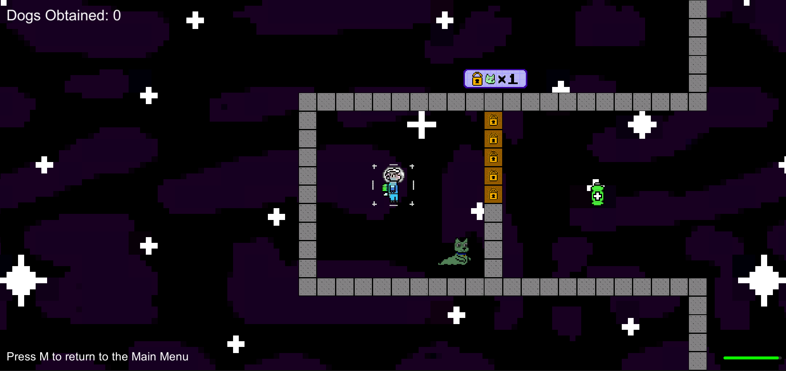
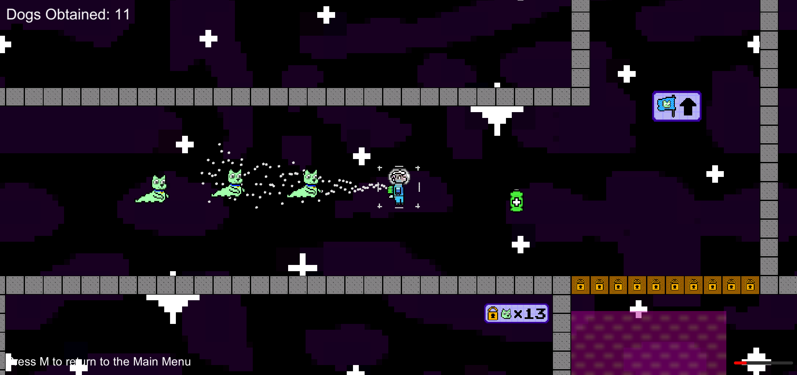

Innovative Mechanics
Phasellus convallis elit id ullamcorper pulvinar. Duis aliquam turpis mauris, eu ultricies erat malesuada quis. Aliquam dapibus.

You are a lamb in space herding lost slug dogs. Better move quickly, your oxygen is running out!
Phasellus convallis elit id ullamcorper pulvinar. Duis aliquam turpis mauris, eu ultricies erat malesuada quis. Aliquam dapibus.
Phasellus convallis elit id ullamcorper pulvinar. Duis aliquam turpis mauris, eu ultricies erat malesuada quis. Aliquam dapibus.
5 Key Mechanics to discover in DogChain.


From a technical standpoint, Jacob worked as the main programmer for unity-related issues and programming tasks. His largest contribution was in the form of the player movement system. Musically, he also created the background track which plays throughout the game.
Talon produced most of the visual assets for DogChain (cute dogs included). When it came to writing code, he was primarily in charge of dog behavior. Some of his other noteworthy contributions include map layout and editing the game's trailer.